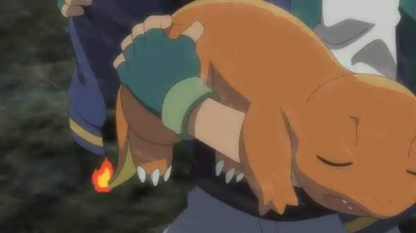

UN CHARMANDER LLEGÓ CON LA COLA APAGADA Y YA ESTÁ RECUPERADO
El Centro Pokémon recibió de madrugada a un Charmander cuya llama de la cola se había apagado tras una pelea. El equipo trabajó toda la noche y hoy ya está de vuelta con su entrenador, sano y con la llama...